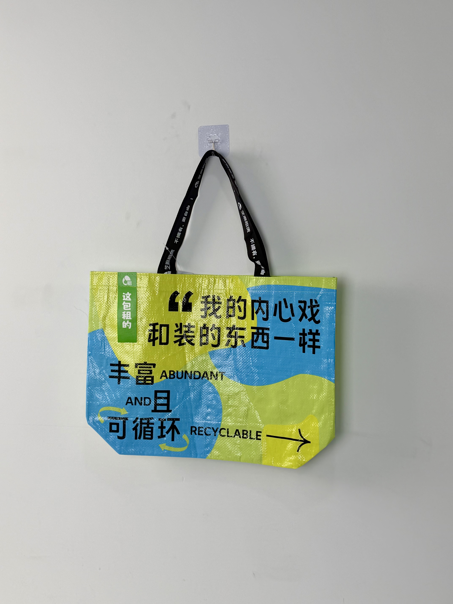

A vibrant recycled-woven tote for Sesame Leasing, featuring bold bilingual messaging and a playful split-color design that turns the circular economy into a fashion statement.

Sesame Leasing is a Chinese circular-economy platform that allows users to rent everything from electronics and fashion to camping equipment and home appliances. Built on the philosophy of "不拥有，更自由" (Don't Own, Be Freer), the brand promotes access over ownership as a sustainable lifestyle choice. In a consumer culture increasingly aware of environmental impact, Sesame Leasing has positioned itself at the intersection of convenience, affordability, and ecological responsibility.
Our bag needs to do two things: make people smile when they read it, and make them think when they reuse it. The message and the material need to tell the same story.
The tote project was developed as a brand-awareness initiative distributed at university campuses, eco-friendly events, and through partner retail channels. Unlike typical corporate promotional items, this bag was designed to embody the brand's core message: the bag itself is reusable, recyclable, and rented — a physical manifestation of circular-economy principles.
The creative concept merges humor with environmental messaging. The playful Chinese copy "我的内心戏和装的东西一样丰富" (My inner drama is as abundant as what's inside) puns on the bag's capacity while revealing the brand's witty personality. The bilingual "丰富 AND 且 可循环 / ABUNDANT AND RECYCLABLE" lockup reinforces the circular-economy message with visual clarity. The split yellow-blue color scheme creates immediate visual distinction in any environment.
Vibrant color-block design creates instant visual recognition and eco-positive energy association.
Humorous Chinese wordplay combined with clear English sustainability messaging for cross-cultural appeal.
Universal recycling symbol reinforcing the brand's circular-economy mission in visual shorthand.
"这包租的" (This bag is rented) tag creates brand-action alignment and conversation starter.
The bag was engineered using recycled woven PP material — aligning the product's physical composition with the brand's sustainability mission. The woven construction provides durability for repeated reuse, while the laminated surface protects the printed messaging through daily wear.
| Parameter | Specification | Test Standard |
|---|---|---|
| Load Capacity | 8 kg | ASTM D5265 |
| Recycled Content | 80% post-industrial | Internal Protocol |
| Color Fastness | Grade 4-5 | ISO 105-B02 |
| Seam Strength | > 28 N/cm | ASTM D1683 |
The sustainable production workflow prioritizes recycled material integration and low-waste manufacturing. The five-stage process transforms post-industrial PP waste into a durable, reusable brand asset.
Post-industrial PP waste sorted, cleaned, and extruded into colored tape. Yellow and blue masterbatch added during extrusion.
Multi-shuttle circular loom interlaces yellow and blue tapes into split-color woven fabric. Color transition aligned during weave.
CMYK process print for typography and graphics. Registration within ±0.5mm across the split-color boundary.
15-micron clear BOPP film for surface protection. Preserves woven texture visibility while preventing print abrasion.
Precision die-cutting with heat-sealed edges. Branded black handles attached with reinforced stitching. Recycled-content verification per batch.
The recyclable tote was distributed across Sesame Leasing's university partnership program, eco-friendly lifestyle festivals, and new-user onboarding packages. The campaign targeted environmentally conscious millennials and Gen-Z consumers who value brands that align with their sustainability values.
Key Insight: The "这包租的" (This bag is rented) tag became a conversation starter that naturally led to explanations of the circular-economy concept. Users reported that strangers frequently asked about the tag, creating organic brand ambassadors who explained Sesame Leasing's business model in their own words.
The split-color design proved particularly effective for social-media sharing. The bold yellow-blue combination created visually striking photos that stood out in Instagram and Xiaohongshu feeds — generating user-generated content that exceeded the brand's paid advertising reach at zero additional cost.
Three design decisions differentiate this circular-economy bag from standard eco-promotional items. Each leverages humor, visual boldness, and material authenticity to create genuine brand connection.
Most sustainable brands lecture consumers about environmental responsibility. Sesame Leasing's witty copy ("My inner drama is as abundant as what's inside") disarms resistance through humor. Customers smile first, then absorb the sustainability message — a far more effective persuasion sequence than guilt-based environmental appeals.
By constructing the bag from 80% recycled woven PP, Sesame Leasing provides tangible proof of its circular-economy claims. The bag isn't just talking about recycling — it is recycled. This material authenticity creates trust that purely communicative sustainability campaigns cannot achieve.
The bold yellow-blue color block is deliberately designed for photographic impact. In a social-media environment where visual distinctiveness determines sharing behavior, the split-color design ensures that every photo of the bag captures attention in crowded feeds. The color combination itself becomes a brand signal.
We manufacture recycled and recyclable woven bags for sustainability-focused brands. From recycled material sourcing to bold eco-messaging, we create packaging that walks your sustainability talk.